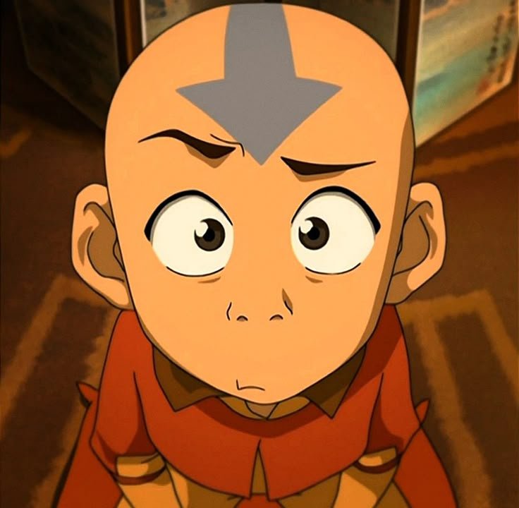

Aang foi um Nômade do Ar nascido em 12 AG e o Avatar durante o conflito conhecido como Guerra dos Cem Anos. Seu antecessor imediato foi o Avatar Roku, e sua sucessora foi a Avatar Korra. Como o Avatar de seu tempo, foi o único capaz de realizar a dobra dos quatro elementos. Ele também foi um dos poucos Avatares, e o primeiro em vários ciclos, a aprender a antiga arte da Dobra de Energia, e o primeiro Avatar a utilizar a técnica.
